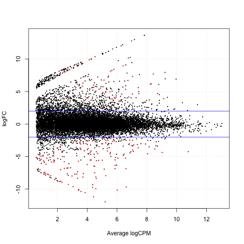

Welcome!
- My name is Dave Tang; I was born in Hong Kong but raised in Papua New Guinea.
- I'm a PhD candidate in bioinformatics at the VU University Amsterdam.
- I'm here to show you how to analyse CAGE data using R in Japan.
Dave Tang
PhD candidate

Source: http://www.nature.com/scitable/topicpage/dna-transcription-426

Image source: me.

Image source: me.
class(iris)
## [1] "data.frame"
head(iris)
## Sepal.Length Sepal.Width Petal.Length Petal.Width Species
## 1 5.1 3.5 1.4 0.2 setosa
## 2 4.9 3.0 1.4 0.2 setosa
## 3 4.7 3.2 1.3 0.2 setosa
## 4 4.6 3.1 1.5 0.2 setosa
## 5 5.0 3.6 1.4 0.2 setosa
## 6 5.4 3.9 1.7 0.4 setosa
head(subset(iris, Sepal.Width > 3.5))
## Sepal.Length Sepal.Width Petal.Length Petal.Width Species
## 5 5.0 3.6 1.4 0.2 setosa
## 6 5.4 3.9 1.7 0.4 setosa
## 11 5.4 3.7 1.5 0.2 setosa
## 15 5.8 4.0 1.2 0.2 setosa
## 16 5.7 4.4 1.5 0.4 setosa
## 17 5.4 3.9 1.3 0.4 setosa
#returns all the functions with 'table' in the name
apropos('table')
#opens the documentation for the function 'table'
?table
#read manual
browseVignettes('CAGEr')
The CAGEr package available on Bioconductor provides various methods for analysing CAGE data. To install the CAGEr package:
source("http://bioconductor.org/biocLite.R")
biocLite("CAGEr")
To load the CAGEr package:
library(CAGEr)
For more information: http://davetang.org/muse/2013/04/16/cage-analysis-using-the-r-bioconductor-package-cage/.
#download and install
source("http://bioconductor.org/biocLite.R")
biocLite("FANTOM3and4CAGE")
#looking at come CAGE data
library(FANTOM3and4CAGE)
data(FANTOMtissueCAGEhuman)
lung_group <- FANTOMtissueCAGEhuman[["lung"]]
head(lung_group)
control_1 <- rep(10, 50)
control_2 <- rep(10, 50)
patient_1 <- c(rep(20, 25),rep(0,25))
patient_2 <- c(rep(20, 25),rep(0,25))
df <- data.frame(c1=control_1, c2=control_2, p1=patient_1, p2=patient_2)
head(df, 2)
## c1 c2 p1 p2
## 1 10 10 20 20
## 2 10 10 20 20
tail(df, 2)
## c1 c2 p1 p2
## 49 10 10 0 0
## 50 10 10 0 0

library(edgeR)
group <- c('control','control','patient','patient')
d <- DGEList(counts=df, group=group)
d <- estimateCommonDisp(d)
de <- exactTest(d)
table(p.adjust(de$table$PValue, method="BH")<0.05)
##
## TRUE
## 50
TMM <- calcNormFactors(d, method="TMM")
TMM$samples
## group lib.size norm.factors
## c1 control 500 0.7071068
## c2 control 500 0.7071068
## p1 patient 500 1.4142136
## p2 patient 500 1.4142136
TMM <- estimateCommonDisp(TMM)
TMM <- exactTest(TMM)
table(p.adjust(TMM$table$PValue, method="BH")<0.05)
##
## FALSE TRUE
## 25 25
library(IRanges)
ir <- IRanges(5,10)
ir
## IRanges of length 1
## start end width
## [1] 5 10 6
start(ir)
## [1] 5
end(ir)
## [1] 10
width(ir)
## [1] 6
Check out my blog post http://davetang.org/muse/2014/11/07/using-genometricorr-package/
install.packages('GenometriCorr',
repos='http://genometricorr.sourceforge.net/R/',
type='source')
cpg <- read.table(url("http://quinlanlab.cs.virginia.edu/cshl2013/cpg.bed"),
header=F,
sep="\t",
stringsAsFactors = F)
chr <- read.table(url("http://quinlanlab.cs.virginia.edu/cshl2013/hesc.chromHmm.bed"),
header=F,
sep="\t",
stringsAsFactors = F)